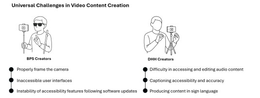
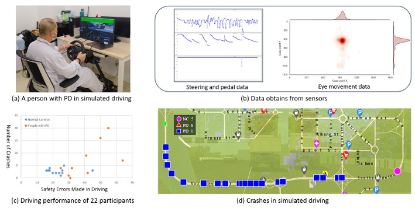

HCI, Accessibility, and Ubicomp
Franklin Mingzhe Li is a Stuart K. Card Fellow, a NSERC Postgraduate Fellow and a final-year PhD Candidate advised by Prof. Patrick A. Carrington in the Human-Computer Interaction Institute at Carnegie Mellon University. He obtained Master of Science degree supervised by Prof. Khai N. Truong in the Department of Computer Science at the University of Toronto. He also obtained Bachelor of Electrical Engineering at the University of Toronto. His research interests are in Human-Computer Interaction (HCI), Assistive Technology, and Ubiquitous Computing (UbiComp). His research focuses on exploring, designing, and deploying Assistive Technologies for physical space and Activities of Daily Living for people with disabilities. His dissertation aims to support and enable non-visual cooking for people with vision impairments through AI and Assistive Technologies.
I am on the Academic and Industry job market this year!
Recent News
Dec 2025, Visiting UMich at Ann Arbor for a Talk!
Oct 2025, Attended ASSETS 2025 in Denver, with 5 papers, presenting two of them!
Sep 2025, Co-organized "Accessible Cyber-Physical Activities" Workshop at UIST 2025!
Aug 2025, Starting as a Co-Instructor for 05332/632 Accessibility and Assistive Technology!
Aug 2025, 4 Invited Talks at Google Research!
Jul 2025, 5 papers accepted at ASSETS 2025, 1 paper accepted at UIST 2025, 1 paper accepted at CSCW 2025!
May 2025, Starting as Research Intern at Google in NYC!
Apr 2025, Traveling to CHI 2025 (Yokohama, Japan)!
Feb 2025, Received Stuart K. Card Fellowship!
Jan 2025, Three papers accepted to CHI 2025!
Oct 2024, Attending ASSETS 2024 (St John's, Canada)!
Oct 2024, Attending to UIST 2024 (Pittsburgh, USA)!
Jun 2024, Traveling to HCIC 2024 (Wisconsin, USA)!
May 2024, Traveling to CHI 2024 (Hawaii, USA)!
Jan 2024, Four papers accepted to CHI 2024!
Oct 2023, Invited Talk at University of Notre Dame (Topic: Building Usable Systems for People with Disabilities in Physical Activities
)
Oct 2023, Traveling to Ubicomp 2023 (Cancun, Mexico)
Jul 2023, One paper and one poster got accepted to ASSETS 2023!
Apr 2023, Traveling to CHI 2023 (Hamburg, Germany)
Feb 2023, Invited Talk at DGP, University of Toronto (Topic: Leveraging AI for Accessibility in Physical Space)
Feb 2023, Two papers accepted to CHI 2023!
...
Selected Peer-Reviewed Full Conference or Journal Publications
Exploring Object Status Recognition for Recipe Progress Tracking in Non-Visual Cooking
Franklin Mingzhe Li, Kaitlyn Ng, Bin Zhu, Patrick Carrington
In Proceedings of the 27th International ACM SIGACCESS Conference on Computers and Accessibility (ASSETS), 2025 [PDF]
More than One Step at a Time: Designing Procedural Feedback for Non-visual Makeup Routines
Franklin Mingzhe Li, Akihiko Oharazawa, Chloe Qingyu Zhu, Misty Fan, Daisuke Sato, Chieko Asakawa, Patrick Carrington
In Proceedings of the 27th International ACM SIGACCESS Conference on Computers and Accessibility (ASSETS), 2025 [PDF]
VizXpress: Towards Expressive Visual Content by Blind Creators Through AI Support
Lotus Zhang, Zhuohao Jerry Zhang, Gina Clepper, Franklin Mingzhe Li, Patrick Carrington, Jacob O Wobbrock, Leah Findlater
In Proceedings of the 27th International ACM SIGACCESS Conference on Computers and Accessibility (ASSETS), 2025 [PDF]
Understanding How Visually Impaired Players Socialize in Mobile Games
Zihe Ran, Xiyu Li, Qing Xiao, Yanyun Wang, Franklin Mingzhe Li, Zhicong Lu
In Proceedings of the 27th International ACM SIGACCESS Conference on Computers and Accessibility (ASSETS), 2025 [PDF]

Understanding the Video Content Creation Journey of Creators with Sensory Impairment in Kenya
Lan Xiao, Maryam Bandukda, Franklin Mingzhe Li, Mark Colley, Catherine Holloway
In Proceedings of the 27th International ACM SIGACCESS Conference on Computers and Accessibility (ASSETS), 2025 [PDF]
AROMA: Mixed-Initiative AI Assistance for Non-Visual Cooking by Grounding Multi-modal Information Between Reality and Videos
Zheng Ning, Leyang Li, Daniel Killough, JooYoung Seo, Patrick Carrington, Yapeng Tian, Yuhang Zhao, Franklin Mingzhe Li, Toby Jia-Jun Li
In The ACM Symposium on User Interface Software and Technology (UIST), 2025 [PDF]
Exploring the Impact of Emotional Voice Integration in Sign-to-Speech Translators for Deaf-to-Hearing Communication
Hyunchul Lim, Minghan Gao, Franklin Mingzhe Li, Nam Anh Dang, Ianip Sit, Michelle M Olson, Cheng Zhang
In Proceedings of ACM on Human-Computer Interaction (PACMHCI), 2025 [PDF]

PANDA: Parkinson's Assistance and Notification Driving Aid
Tianyang Wen, Xucheng Zhang, Zhirong Wan, Jing Zhao, Yicheng Zhu, Ning Su, Xiaolan Peng, Jin Huang, Wei Sun, Feng Tian, Franklin Mingzhe Li
In Proceedings of the ACM Conference on Human Factors in Computing Systems (CHI), 2025 [PDF]
SpellRing: Recognizing Continuous Fingerspelling in American Sign Language using a Ring
Hyunchul Lim, Nam Anh Dang, Dylan Lee, Tianhong Catherine Yu, Jane Lu, Franklin Mingzhe Li, Yiqi Jin, Yan Ma, Xiaojun Bi, François Guimbretière, Cheng Zhang
In Proceedings of the ACM Conference on Human Factors in Computing Systems (CHI), 2025 [PDF]
How Users Who are Blind or Low Vision Play Mobile Games: Perceptions, Challenges, and Strategies
Zihe Ran, Xiyu Li, Qing Xiao, Xianzhe Fan, Franklin Mingzhe Li, Yanyun Wang, Zhicong Lu
In Proceedings of the ACM Conference on Human Factors in Computing Systems (CHI), 2025 [PDF]
A Recipe for Success? Exploring Strategies for Improving Non-Visual Access to Cooking Instructions
Franklin Mingzhe Li, Ashley Wang, Patrick Carrington, Shaun K Kane
In Proceedings of the 26th International ACM SIGACCESS Conference on Computers and Accessibility (ASSETS), 2024 [PDF]
A Contextual Inquiry of People with Vision Impairments in Cooking
Franklin Mingzhe Li, Michael Xieyang Liu, Shaun K Kane, Patrick Carrington
In Proceedings of the ACM Conference on Human Factors in Computing Systems (CHI), 2024 [PDF]

Co-design Accessible Public Robots: Insights from People with Mobility Disability, Robotic Practitioners and Their Collaborations
Howard Ziyu Han, Franklin Mingzhe Li, Alesandra Baca Vazquez, Daragh Byrne, Nikolas Martelaro, Sarah E Fox
In Proceedings of the ACM Conference on Human Factors in Computing Systems (CHI), 2024 [PDF]
Designing Upper-Body Gesture Interaction with and for People with Spinal Muscular Atrophy in VR
Jingze Tian, Yingna Wang, Keye Yu, Liyi Xu, Junan Xie, Franklin Mingzhe Li, Yafeng Niu, Mingming Fan
In Proceedings of the ACM Conference on Human Factors in Computing Systems (CHI), 2024 [PDF]

Selenite: Scaffolding Online Sensemaking with Comprehensive Overviews Elicited from Large Language Models
Michael Xieyang Liu, Tongshuang Wu, Tianying Chen, Franklin Mingzhe Li, Aniket Kittur, Brad A Myers
In Proceedings of the ACM Conference on Human Factors in Computing Systems (CHI), 2024 [PDF]
Embodied Exploration: Facilitating Remote Accessibility Assessment for Wheelchair Users with Virtual Reality
Siyou Pei, Alexander Chen, Chen Chen, Franklin Mingzhe Li, Megan Fozzard, Hao-Yun Chi, Nadir Weibel, Patrick Carrington, Yang Zhang
In Proceedings of the 25th International ACM SIGACCESS Conference on Computers and Accessibility (ASSETS), 2023 [PDF]
Understanding Visual Arts Experiences of Blind People
Franklin Mingzhe Li*, Lotus Zhang*, Maryam Bandukda, Abigale Stangl, Kristen Shinohara, Leah Findlater, Patrick Carrington (*Equal contribution)
In Proceedings of the ACM Conference on Human Factors in Computing Systems (CHI), 2023 [PDF]
Breaking the "Inescapable" Cycle of Pain: Supporting Wheelchair Users' Upper Extremity Health Awareness and Management with Tracking Technologies
Yunzhi Li, Franklin Mingzhe Li, Patrick Carrington
In Proceedings of the ACM Conference on Human Factors in Computing Systems (CHI), 2023 [PDF]
Freedom to Choose: Understanding Input Modality Preferences of People with Upper-body Motor Impairments for Activities of Daily Living
Franklin Mingzhe Li, Michael Xieyang Liu, Yang Zhang, Patrick Carrington
In Proceedings of the 24th International ACM SIGACCESS Conference on Computers and Accessibility (ASSETS), 2022 [PDF]
“It Feels Like Taking a Gamble”: Exploring Perceptions, Practices, and Challenges of Using Makeup and Cosmetics for People with Visual Impairments
Franklin Mingzhe Li*, Francheska Spektor*, Meng Xia*, Mina Huh*, Peter Cederberg, Yuqi Gong, Kristen Shinohara, Patrick Carrington (*Equal contribution)
In Proceedings of the ACM Conference on Human Factors in Computing Systems (CHI), 2022 [PDF]
Understanding How Older Adults Comprehend COVID-19 Interactive Visualizations via Think-Aloud Protocol
Mingming Fan, Yiwen Wang, Yuni Xie, Franklin Mingzhe Li, Chunyang Chen
International Journal of Human-Computer Interaction (IJHCI), 2022 [PDF]

An Exploration of Captioning Practices and Challenges of Individual Content Creators on YouTube for People with Hearing Impairments
Franklin Mingzhe Li, Cheng Lu, Zhicong Lu, Patrick Carrington, Khai N. Truong
In Proceedings of ACM on Human-Computer Interaction (PACMHCI), Volume 6, Issue CSCW1, Article 75, 2022 [PDF]

Non-Visual Cooking: Exploring Practices and Challenges of Meal Preparation by People with Visual Impairments
Franklin Mingzhe Li, Jamie Dorst, Peter Cederberg, Patrick Carrington
In Proceedings of the 23rd International ACM SIGACCESS Conference on Computers and Accessibility (ASSETS), 2021 [PDF]

ThumbTrak: Recognizing Micro-finger Poses Using a Ring with Proximity Sensing
Wei Sun, Franklin Mingzhe Li, Congshu Huang, Zhenyu Lei, Benjamin Steeper, Songyun Tao, Feng Tian, Cheng Zhang
In Proceedings of the 23rd International Conference on Human-Computer Interaction with Mobile Devices and Services (MobileHCI), 2021 [PDF]

"I Choose Assistive Devices That Save My Face" A Study on Perceptions of Accessibility and Assistive Technology Use Conducted in China
Franklin Mingzhe Li, Di Laura Chen, Mingming Fan, Khai N. Truong
In Proceedings of the ACM Conference on Human Factors in Computing Systems (CHI), 2021 [PDF]

TeethTap: Recognizing Discrete Teeth Gestures using Motion and Acoustic Sensing on an Earpiece
Wei Sun*, Franklin Mingzhe Li*, Benjamin Steeper*, Songlin Xu, Feng Tian, Cheng Zhang (*Equal contribution)
In Proceedings of the 26th International Conference on Intelligent User Interfaces (IUI), 2021 [PDF]

Eyelid Gestures on Mobile Devices for People with Motor Impairments
Mingming Fan*, Zhen Li*, Franklin Mingzhe Li* (*Equal contribution)
In Proceedings of the 22th International ACM SIGACCESS Conference on Computers and Accessibility (ASSETS), 2020 [PDF] Best Artifact Award

FMT: A Wearable Camera-Based Object Tracking Memory Aid for Older Adults
Franklin Mingzhe Li, Di Laura Chen, Mingming Fan, Khai N. Truong
In Proceedings of ACM on Interactive, Mobile, Wearable and Ubiquitous Technologies (IMWUT), 2019 [PDF]

Face Recognition Assistant for People with Visual Impairments
Mohammad Kianpisheh, Franklin Mingzhe Li, Khai N. Truong
In Proceedings of ACM on Interactive, Mobile, Wearable and Ubiquitous Technologies (IMWUT), 2019 [PDF]

BrailleSketch: A Gesture-based Text Input Method for People with Visual Impairments
Franklin Mingzhe Li, Mingming Fan, Khai N. Truong
In Proceedings of the 19th International ACM SIGACCESS Conference on Computers and Accessibility (ASSETS), 2017 [PDF]

The Living Room: Exploring the Haunted and Paranormal to Transform Design and Interaction
Michelle Annett, Matthew Lakier, Franklin Mingzhe Li, Daniel Wigdor, Tovi Grossman, George Fitzmaurice
In Proceedings of the 2016 ACM Conference on Designing Interactive Systems (DIS), 2016 [PDF]
Professional Experiences
2025.05 - 2025.08
Research Intern at Google NYC. Hosted by Dr. Cynthia Bennett, and Dr. Shaun Kane
2019.05 - 2019.09
Research Intern at Apple (Turi). Hosted by Dr. Jeffrey P. Bigham, and Dr. Xiaoyi Zhang
2016.05 - 2017.08
Hardware Engineer at AMD
Grants and Fellowships
Academic Research Fund (AcRF) Tier 2, Singapore Ministry of Education ($960,000), Role: Collaborator; PI: Bin Zhu, Aug 2025
Stuart K. Card Fellowship, Carnegie Mellon University ($120,000), Role: PI, Feb 2025
Google's Research Collabs, Google Inc. ($80,000 Plus $20,000 in Google Cloud), Role: Co-PI; PI: Patrick Carrington, Aug 2022
Postgraduate Scholarship-Doctoral, Natural Sciences and Engineering Research Council of Canada (NSERC) ($63,000 over 36 Months), Role: PI, April 2021
Inclusive Design Challenge Award, US Department of Transportation ($300,000), Role: Collaborator; PI: Nik Martelaro; Co-PIs: Patrick Carrington, Sarah Fox, Jodi Forlizzi, Jan 2021
Faculty of Arts And Science Tuition Fellowship, University of Toronto ($18,558), Role: PI, Sept 2018
Faculty of Arts And Science Program-Level Fellowship, University of Toronto ($1000), Role: PI, Nov 2018
Awards and Scholarship
Graduate Student Assembly/Provost Conference Funds, Carnegie Mellon University ($750), Oct 2022
Graduate Student Assembly/Provost Conference Funds, Carnegie Mellon University ($750), Mar 2022
Best Artifact Award, ASSETS 2020 ($500), Oct 2020
Markham Intern of the Year Award Nominee, AMD, Aug 2017
UTRECS Scholarship, University of Toronto ($6000), Aug 2015
Selected Patent
US Patent: On-the-fly calibration for improved on-device eye tracking (2021.08)
Media Coverage and Featuring
Cornell Ann S. Bowers College of Computing and Information Science: AI ring tracks spelled words in American Sign Language (2025.03)
Carnegie Mellon School of Computer Science: Accessing Recipe Information Without Looking (2024.12)
Carnegie Mellon School of Computer Science: New Search Engine Tool Helps Users Make Sense of Unfamiliar Topics (2023.06)
Carnegie Mellon University: Accessibility Enables Equality (2022.08)
Communications of the ACM: Eyelid gestures for people with motor impairments (2022.01)
IEEE Spectrum: The Next Frontier for Gesture Control is Teeth (2021.05)
Mobility21: Mobility21 Researchers Win US Department of Transportation Inclusive Design Challenge Award (2021.01)
New Scientist: Where have I left my wallet? This smart camera can remind you (2019.09)
Community Services
SIGCHI Accessibility Committee
Vice-Chair (2024-present)
Member (2023-2024)
Organizing Committee
Publication Chair (CHI 2025), Accessibility Chair (ASSETS 2025, CHI 2024, CSCW 2023, HCOMP/CI 2023, C&C 2023, C&C 2022, C&C 2021), Inclusion and Broad Participation Chair (Ubicomp 2024), Student Volunteer Co-chair (ASSETS 2022)
Program Committee
Associate Chair (CHI 2026, Ubicomp/ISCW 2025, CHI 2025, ASSETS 2024, CHI 2024, Chinese-CHI 2021, CHI 2020 Late Breaking Works)
Reviewers
CHI 2026 (13), Ubicomp/ISWC 2025 (5), UIST 2025 (1), CHI 2025 (14), IMWUT 2025 (2), ASSETS 2024 (7), UIST 2024 (2), IMWUT 2024 (2) CHI 2024 (13), ASSETS 2023 (2), CHI 2023 (5), TACCESS 2023 (1), IMWUT 2023 (1), UIST 2023 (1), TACCESS 2022 (1), ISS 2022 (2), CHI 2022 (7), CHI 2022 Late Breaking Works (1), ISS 2021 (1), UIST 2021 (1), CSCW 2021 (3), CHI 2021 (4), Chinese-CHI 2021(3), IDC 2021 (1), EICS PACM 2021 (1), UIST 2020 (1), IJHCS (1), CHI 2020 (2), CHI 2020 Late Breaking Works (8), CHI 2019 Late Breaking Works (5)
Student Volunteer
ASSETS 2020
Teaching Experiences and Invited Talks
Co-Instructor: Accessibility and Assistive Technology (05332/632)
Carnegie Mellon University
Invited Talk: Conversational Audio Description Editor
Google LLC, Invited by Dr. Cindy Bennett and Dr. Shaun Kane
Invited Talk: Building Usable Systems for People with Disabilities in Physical Activities
University of Rochester (Mar 2024), Invited by Dr. Yukang Yan
Guest Lecture: Designing Human-Centered Software
Carnegie Mellon University (Mar 2024), Invited by Dr. Aaron Steinfeld
Guest Lecture: Designing Human-Centered Software
Carnegie Mellon University (Feb 2024), Invited by Dr. Sherry Tongshuang Wu
Invited Talk: Building Usable Systems for People with Disabilities in Physical Activities
University of Notre Dame (Oct 2023), Invited by Dr. Toby Jia-jun Li
Guest Lecture: Designing Human-Centered Software
Carnegie Mellon University (Oct 2023), Invited by Dr. Aaron Steinfeld and Dr. Sherry Tongshuang Wu
Teaching Assistant: Designing Human-Centered Software
Carnegie Mellon University (May 2023)
Invited Talk: Leveraging AI for Accessibility in Physical Space
APEX Lab, The Hong Kong University of Science and Technology (HKUST) (Mar 2023), Invited by Dr. Mingming Fan
Invited Talk: Leveraging AI for Accessibility in Physical Space
DGP Lab, University of Toronto (Feb 2023)
Teaching Assistant: User-Centered Research and Evaluation
Carnegie Mellon University (Dec 2022)
Teaching Assistant: CSC258H1S: Computer Organization
University of Toronto (Apr 2019)
Teaching Assistant: CSC258H1S: Computer Organization
University of Toronto (Dec 2018)